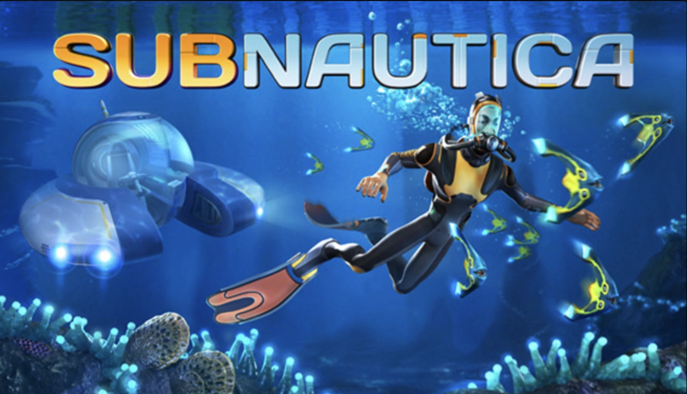

subnautica
Subnautica — это приключенческая игра, разработанная и изданная Unknown Worlds Entertainment . Игроки управляют второстепенным начальником по обслуживанию систем по имени Райли, которого в сообществе Subnautica часто называют уборщиком , который является единственным выжившим после крушения космического корабля на чужой планете. Они могут свободно исследовать океаническую планету. Основные цели — найти необходимые ресурсы, выжить среди местной флоры и фауны и найти способ сбежать с планеты. Он включает в себя некоторые элементы игр на выживание и некоторые элементы игр, не связанных с выживанием. Subnautica была выпущена в раннем доступе для Windows в декабре 2014 года, для macOS в июне 2015 года и для Xbox One в мае 2016 года. Игра вышла из раннего доступа в январе 2018 года для macOS и Windows, а версии для PlayStation 4 и Xbox One — в декабре. 2018. Физические консольные версии опубликовала компания Gearbox Publishing . Версии для Nintendo Switch , PlayStation 5 и Xbox Series X/S были выпущены в мае 2021 года. Они получили в целом положительные отзывы критиков, и к январю 2020 года было продано более 5 миллионов единиц . В мае было выпущено продолжение Subnautica: Below Zero . 2021. Геймплей Subnautica — это приключенческая игра на выживание , действие которой разворачивается в открытом мире и ведется от первого лица . Игрок управляет единственным выжившим на разбившемся космическом корабле, известным как Аврора , Райли Робинсоном, который застрял на далекой океанской планете , известной как 4546B в Галактике Андромеды. Основная цель — исследовать океан и пережить его опасности, одновременно выполняя задания по продвижению сюжета. Игроки могут собирать ресурсы и чертежи, создавать инструменты, строить базы и подводные лодки , а также взаимодействовать с дикой природой планеты. [1] [2] [3] Некоторые из наиболее серьезных опасностей для игрока включают опасную фауну, включая, помимо прочего: крабов, варперов, месмеров, костяных акул, ампилов, сталкеров, раков и формы жизни класса Левиафан, такие как Жнец, Морской Дракон и Призрачные Левиафаны. Фауна варьируется в зависимости от местоположения и распространена в экологически различных биомах, которые в основном включают: Безопасное мелководье, Зону крушения, Грибной лес, Лес водорослей и Травянистое плато. Большая часть игры разворачивается под водой, с двумя исследуемыми островами, спрятанными в северо-западной и юго-западной частях карты, и моделируемым сменой дня и ночи, влияющим на видимость, а также затмением, которое случается в редких случаях. При начале новой игры игрокам предоставляется выбор между четырьмя режимами сложности: В режиме выживания игрок управляет своим истощающимся здоровьем, голодом, жаждой и кислородом. Если игрок умирает, он возрождается , но некоторые предметы удаляются из его инвентаря. В режиме свободы игровой процесс почти идентичен режиму выживания, но без голода и жажды. В хардкорном режиме игровой процесс включает необратимую смерть . Если игрок умирает, он не возрождается, а его файл сохранения удаляется навсегда. Кроме того, игрок не получает предупреждений о низком уровне кислорода, как в других режимах. В творческом режиме все истощающие характеристики, такие как здоровье и жажда, удаляются, все чертежи разблокируются, и игрок может создавать предметы без необходимости в ресурсах. Кроме того, предусмотрены подводные аппараты, стазис-винтовка, Seaglide, отсек для мобильных транспортных средств и двигательная пушка, которым не требуется источник энергии для работы и которые невосприимчивы к глубине раздавливания. Игра поддерживает VR-гарнитуры, такие как HTC Vive и Oculus Rift , с дополнительным вводом клавиатуры и мыши или игрового контроллера. [4] Сюжет Примерно за 1000 лет до событий игры «Предшественники», древний, развитый инопланетный вид, прибыли на 4546B в поисках лекарства от апокалиптически смертельной болезни («Бактерия Хараа»). Исследуя тысячи планет в попытке найти лекарство, Предтечи в конечном итоге обнаружили на 4546B вид организма, Морского Императора Левиафана, который производил фермент («Фермент 42»), который мог вылечить Хараа. К сожалению, единственный живой Морской Император был слишком стар, чтобы производить фермент в достаточной мощности для разработки лекарства. Хотя Предтечи пытались заставить яйца Морского Императора вылупиться, надеясь получить от ее потомства более мощную форму Фермента 42, им это не удалось. Пытаясь лучше понять процесс высиживания яиц Морского Императора, Предтечи взяли для изучения яйцо Морского Дракона Левиафана (эволюционного родственника Морского Императора). Морской Дракон, чье яйцо они забрали, неоднократно таранил объект, где хранились яйца, разрушая его и позволяя образцам Хараа попасть в экосистему планеты. Предтечи создали объект, известный как Платформа карантинного контроля, большое оружие, которое стреляет по любому космическому кораблю, пытающемуся приземлиться или покинуть 4546B, перед эвакуацией. Хараа не смог уничтожить жизнь на 4546B из-за небольшого количества Фермента 42, который был распространен (непреднамеренно) через вентиляционную систему, построенную Предшественниками, которая соединяла открытый океан с камерой содержания Морского Императора. Намного позже, за 10 лет до событий игры, частное судно « Дегаси» подошло слишком близко к 4546B и было сбито. Трое членов экипажа — капитан, наемник и сын капитана — катапультировались в спасательной капсуле. После нескольких недель дрейфа их выбросило на берег Плавучего острова, острова (видимого в игре), удерживаемого огромными плавучими существами, навсегда прилипшими к его нижней части. Выжившие Дегаси построили на острове базу и начали выращивать еду . В конце концов на берег выбросило небольшой инопланетный артефакт, который был обнаружен наемником. Напряженность нарастала, когда наемник настаивал на том, чтобы они покинули остров и двинулись в океан, ссылаясь на истощение запасов продовольствия, нехватку ресурсов на острове и желание выяснить происхождение инопланетного артефакта в качестве оправдания для этого. Капитан, хотя изначально хотел остаться на острове и ждать спасения, сдался после того, как дождь затопил их грядки, а оползень частично разрушил их среду обитания. Они построили базу в системе подводных пещер («Пещеры Медузных грибов»). Некоторое время во время их пребывания в Пещерах Медузных Грибов сын капитана уловил на сканере загадочную энергетическую подпись. И снова капитан и его сын неохотно согласились на предложение наемника переместиться в еще более глубокую локацию в поисках ответов. На своей новой базе в биоме «Большой риф» сын капитана узнал о существовании бактерии Хараа и пришел к выводу, что все животные на планете, включая их самих, заражены ею. Сын капитана решил найти лекарство от инфекции, пытаясь выяснить, как рыбы остаются невосприимчивыми к этой болезни. Во время своих исследований наемник напал на хищного Жнеца Левиафана и отбуксировал его обратно на базу с помощью подводной лодки. Вскоре после этого на базу напал второй Жнец-Левиафан, в результате чего капитан погиб. Сын капитана, полагая, что наемник мертв, вернулся на Плавучий остров и построил небольшую обсерваторию на вершине одной из гор острова, прежде чем заразиться инфекцией Хараа и умереть. Наемница пережила борьбу с Жнецом-Левиафаном, убив его и использовав в качестве импровизированного плота. Она уплыла в полярный регион планеты и снова появляется в Subnautica: Below Zero . 10 лет спустя « Аврора», новый флагман корпорации «Альтерра», подошла слишком близко к 4546B во время поиска останков «Дегаси» и была сбита. Через 8 часов после крушения Аврора получает чертеж спасательной ракеты из штаб-квартиры Альтерры, как раз перед тем, как приемник дальнего действия отключается. Многие члены экипажа катапультируются в спасательных капсулах, но выживает только один: игровой персонаж Райли Робинсон, который заражается Хараа вскоре после приземления. После ремонта радио и вторичных систем своей спасательной капсулы Райли начинает принимать радиопередачи, ведущие его к другим (теперь пустым) спасательным капсулам. По прошествии некоторого времени Райли начинает получать сообщения с торгового судна Андромеды «Солнечный луч». Обнаружив поле обломков на орбите вокруг и на поверхности 4546B, Санбим приходит на помощь Райли. Санбим сбит Карантинной платформой при приземлении, взорвавшись в воздухе и не оставив выживших. После этого Райли получает последнее сообщение из штаб-квартиры Альтерры, информирующее его о чертеже спасательной ракеты в каюте капитана на борту « Авроры» и предоставляющее ему код доступа к комнате. Райли также начинает получать телепатические сообщения от Морского Императора Левиафана в Главной камере содержания. Морской Император помогает Райли найти камеру содержания, кратко объясняя ее историю с Предтечами и прося Райли активировать телепорт в ее камере содержания и высиживать яйца, чтобы ее детеныши могли быть свободны. Она дает Райли рецепт фермента, который позволит ее яйцам вылупиться. После вылупления яиц молодые морские императоры-левиафаны выплевывают концентрированную форму фермента 42, который лечит инфекцию Райли, а также всю другую зараженную рыбу на 4546B, окончательно искореняя болезнь. Вылечившись, Райли может отключить платформу карантинного контроля (ее может отключить только человек, не зараженный Хараа), построить спасательную ракету и покинуть планету. После того, как кредиты заканчиваются, можно услышать автоматический голос, сообщающий Райли, что у него есть долг перед Альтеррой в один триллион кредитов, и что ему будет предоставлено разрешение на приземление только после того, как он его погасит. Развитие Чарли Кливленд и Джонас Ботель выступают на конференции разработчиков игр 2019 Subnautica была анонсирована компанией Unknown Worlds Entertainment 17 декабря 2013 года [1] с Чарли Кливлендом в качестве режиссера и ведущего программиста игрового процесса и Хью Джереми в качестве продюсера. Музыку написал Саймон Чилински. Кливленд был сильно вдохновлен Minecraft , который, по его словам, «преобразовал игровую индустрию» и «отбросил все традиционные игры, ориентированные на вызов и прогресс». Выпуск Minecraft совпал с выпуском Unknown Worlds Natural Selection 2 . Почувствовав усталость, команда захотела попробовать что-то новое и решила сделать такую игру. Другие влияния включали подводное плавание , фильмографию Джеймса Кэмерона и «просто ощущение исследования глубоких, темных, попеременно красивых и ужасных океанских глубин. Ощущение, что я исследователь, почти астронавт, не знающий, что Я найду". Кливленд изначально рассматривал ее не как игру на выживание , а как игру-исследование. Команда разработчиков решила использовать движок Unity , а не Spark, движок, который использовался в предыдущей игре компании Natural Selection 2 . Продюсер Subnautica Хью Джереми объяснил это решение разными требованиями, которые игра предъявляет к движку, и «поскольку в [команде] нет людей, работающих над Spark, для Subnautica нецелесообразно использовать Spark. Используя Unity для Subnautica , Spark может продолжать развиваться в определенных направлениях, в то время как Subnautica развивается в других. Использовать Spark для Subnautica — все равно, что пытаться вставить квадратный колышек в круглое отверстие». В игре отсутствует традиционная структура миссий или квестов, обычно встречающаяся в видеоиграх. Это был осознанный выбор; Кливленд заявил, что «при внутреннем вознаграждении людей вместо этого поощряют просто выполнять действия ради их собственных заслуг, меньше людей будет мотивировано делать это. Но если бы они преодолели этот период обучения, они дошли бы до того момента, когда они усвоили бы это занятие доставляет удовольствие само по себе, и они будут продолжаться». [10] Кливленд выбрал это после прочтения эссе Джейми Ченга, который реализовал аналогичную философию в своей игре Don’t Starve . Версии Subnautica в раннем доступе были выпущены в раннем доступе Steam 16 декабря 2014 г. [11] и в предварительной версии Xbox One 17 мая 2016 г. Во время этого первоначального выпуска в игре не было ни голода, ни жажды. механика. Получив критику, особенно от одного игрока, чья критика «зацепила меня», команда решила включить такую систему, в конечном итоге обнаружив, что она помогает игрокам ориентироваться на ранних этапах игры. Полная версия игры была выпущена 23 января 2018 года для персональных компьютеров MacOS и Windows , и 4 декабря 2018 года для консолей PlayStation 4 и Xbox One. Версии игры для Nintendo Switch, PlayStation 5 и Xbox Series X/S, а также ее продолжение под названием Subnautica : Below Zero были выпущены 14 мая 2021 года. Ранее , Below Zero вышла в раннем доступе 30 января 2019 года. Прием Прием Общий балл Агрегатор Счет Метакритик (ПК) 87/100 (PS4) 80/100 (XONE) 81/100 Оценки по отзывам Публикация Счет Деструктоид 9,5/10 Информер игр 8,75/10 GameSpot 9/10 ИгрыРадар+ ИГН 9,1/10 Нинтендо Жизнь 9/10 Всемирный отчет Nintendo 8/10 Официальный журнал PlayStation – Великобритания 8/10 Официальный журнал Xbox (Великобритания) 8/10 ПК-геймер (США) 89/100 Subnautica получила положительный отклик перед выпуском. Ян Бирнбаум из PC Gamer охарактеризовал Subnautica как «подводный Minecraft », отметив, что «с опытным разработчиком у руля и безграничным разнообразием океанов, в которых можно играть, Subnautica придется приложить немало усилий, чтобы пойти совсем не так. Набор инструментов становится глубже, а форма финала игры определена, Subnautica станет уникальным примером того, как выживание может быть напряженным, полезным и веселым». [2] Марш Дэвис из Rock, Paper, Shotgun высоко оценил полезность исследования мира Subnautica , но раскритиковал «произвол» и отсутствие интуиции в некоторых внутриигровых рецептах. По данным агрегатора обзоров Metacritic , при запуске игра получила «в целом положительные отзывы» на всех платформах . К январю 2020 года на всех платформах было продано более 5,23 миллиона копий, не считая бесплатных копий, раздаваемых в рамках рекламных акций. Похвалы Год Премия Категория Результат Ссылка. 2018 год Золотой джойстик Лучший визуальный дизайн номинирован Лучший аудиодизайн номинирован Премия за прорыв (Неизвестные миры) Выиграл Компьютерная игра года Выиграл Лучшая игра года номинирован Награда «Выбор геймеров» Любимая фанатами инди-игра Выиграл 2019 год 22-я ежегодная премия DICE Выдающиеся достижения в игровом дизайне номинирован Награды Национальной академии рецензентов видеоигр Игра года номинирован Звуковые эффекты номинирован 15-я церемония вручения наград Игр Британской академии Оригинальная собственность номинирован
Видео про Subnautica
саунтрек subnautica
офис разработчиков